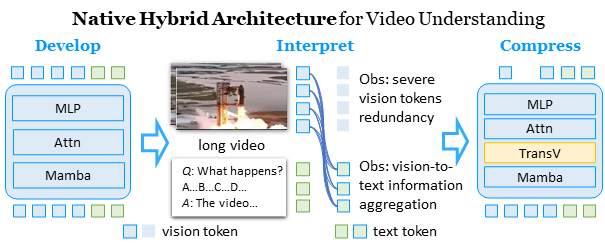
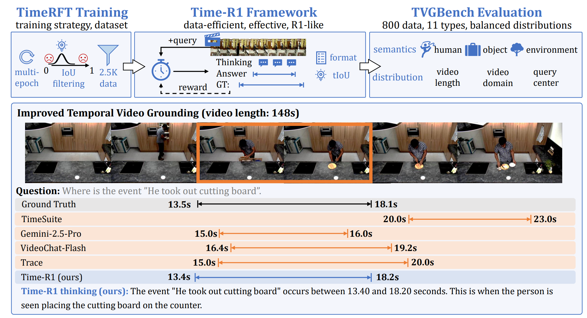
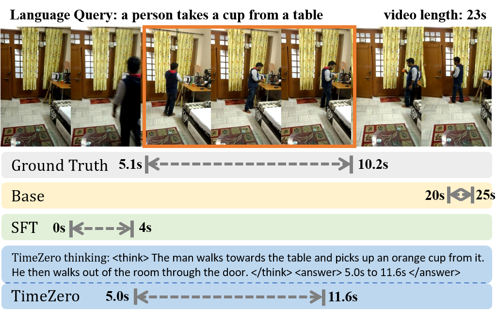
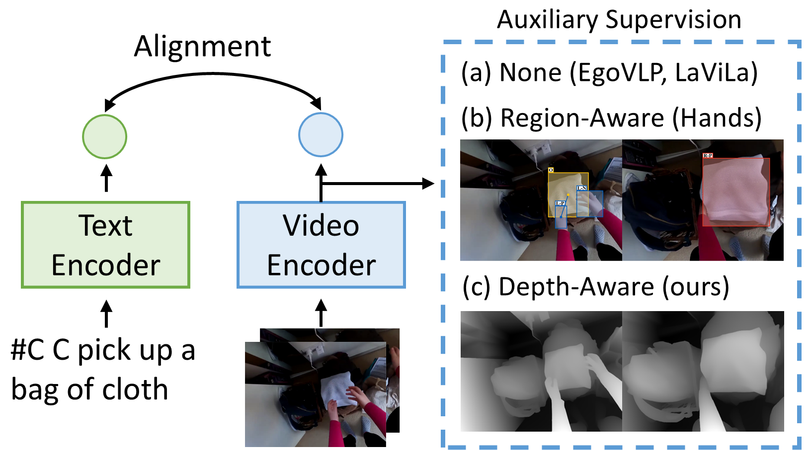
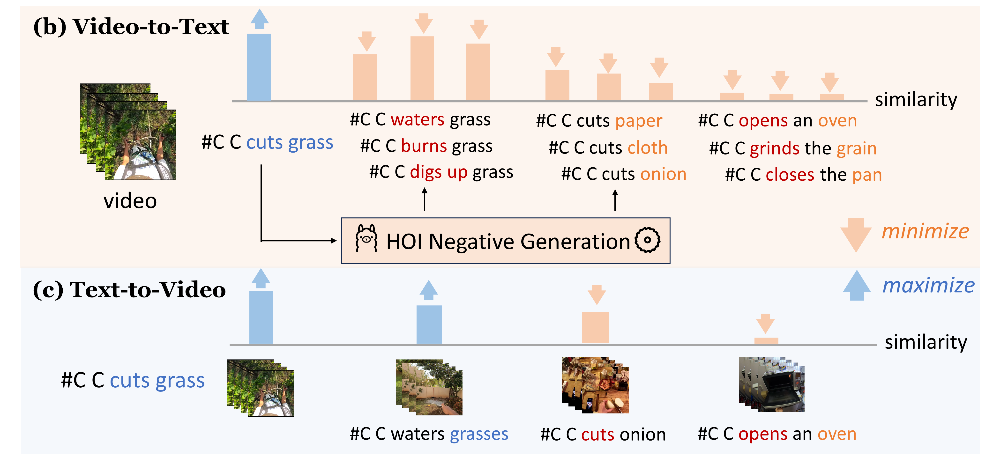
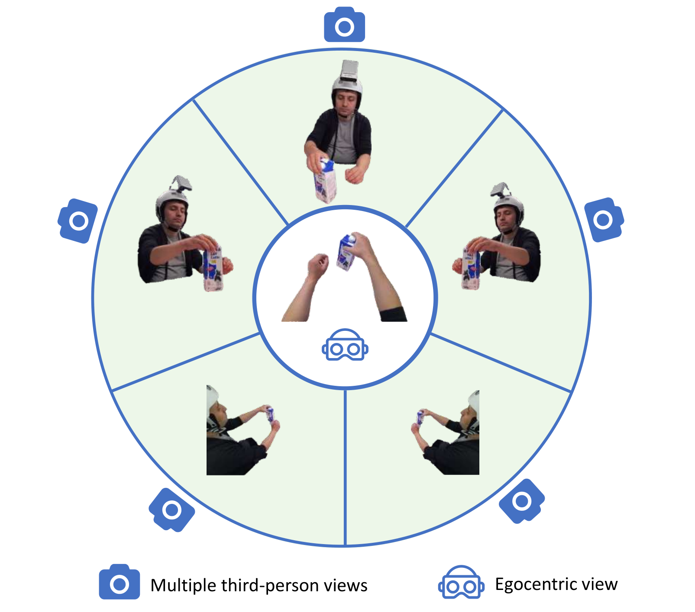
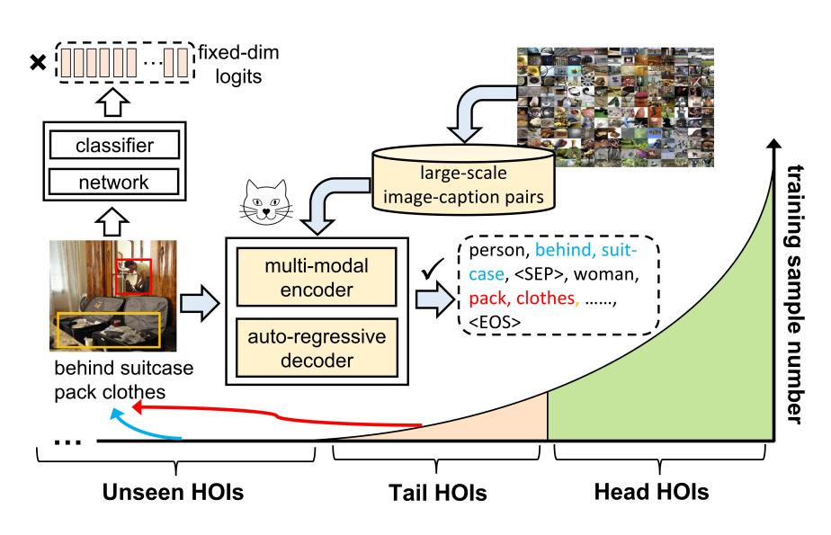
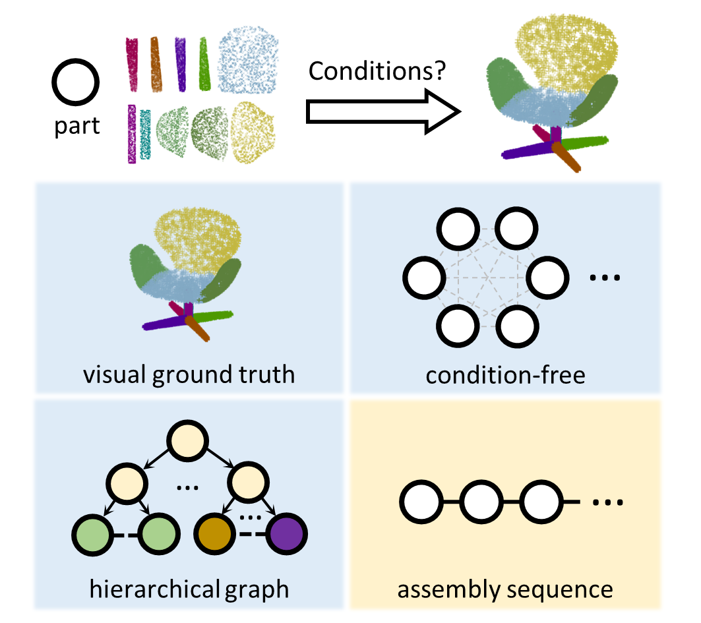

Research
My research interests center around computer vision, vision-and-language, and LLM/VLM agents.
In particular, I work on:
- Multimodal agents. More recently, I have been exploring general-purpose agents, systems that can perceive, reason, and act across open-ended tasks and environments. Besides, I focus on visual content understanding and generation that is programmable and expressed as code, aiming to find representations that are more token-efficient for LLMs, that enhance models' foundational capabilities, and that are more editable for productivity scenarios.
- Video understanding. Video is the continuous two-dimensional projection of the four-dimensional spatio-temporal world. Correspondingly, I have studied video from three perspectives: performing complex visual reasoning and content understanding over its rich semantics; learning knowledge of the world and 3D representations from its visual content; and building long-context model architectures that are both fast and accurate.
- Human-environment interaction. Human-environment interaction embodies rich knowledge of interaction, motion, and physics. I have focused on learning generalizable representations from first-person (egocentric) video, with two goals in mind: empowering VR/AR glasses with egocentric understanding to serve as an everyday AI assistant, and building robots with human-like capabilities. I have also briefly studied 3D human-object interaction modeling: building image-to-3D models that produce explicit 3D representations, which can support robot data construction and real-world operation in VR/AR.
|
Multimodal Large Language Models
|
|

|
TimeViper: A Hybrid Mamba-Transformer Vision-Language Model for Efficient Long Video Understanding
Boshen Xu*‡, Zihan Xiao*, Jiaze Li,
Jianzhong Ju,
Zhenbo Luo, Jian Luan, Qin Jin†
CVPR, 2026
project page /
code /
arxiv / poster
We introduce TimeViper, a hybrid vision-language model for long video understanding. This work represents an initial step towards developing, interpreting, and compressing hybrid Mamba-Transformer architectures.
|
|

|
Time-R1: Post-Training Large Vision Language Model for Temporal Video Grounding
Ye Wang*, Ziheng Wang*, Boshen Xu*‡, Yang Du, Kejun Lin, Zihan Xiao,
Zihao Yue, Jianzhong Ju, Liang Zhang, Dingyi Yang, Xiangnan Fang, Zewen He,
Zhenbo Luo, Wenxuan Wang, Junqi Lin, Jian Luan, Qin Jin†
NeurIPS, 2025
project page /
code /
arxiv /
slides
We introduce Time-R1 framework, TimeRFT training, and TVGBench for LVLM evaluation, to advance the field of using LVLM for temporal video grounding.
Time-R1 achieves state-of-the-art performance on TVG using only 2.5K data for RL fine-tuning, with improved performance on 4 VQA benchmarks.
|
|

|
TimeZero: Temporal Video Grounding with Reasoning-Guided LVLM
Ye Wang*, Boshen Xu*, Zihao Yue, Zihan Xiao , Ziheng Wang,
Liang Zhang , Dingyi Yang, Wenxuan Wang, Qin Jin†
CVPRW, 2025
code /
arxiv
We propose TimeZero, a reasoning-guided LVLM for temporal video grounding that extends inference through reinforcement learning to reason about video-language relationships. Achieves state-of-the-art performance on Charades-STA benchmark.
|
- EventLens: Event-Structure Reinforcement Learning for Video Understanding, Guowen Zhang, Boshen Xu, Zihao Yue, Ziheng Wang, Xiaokun Liu, Xin Tao, Wenyu Qin, Pengfei Wan, Qin Jin†. NeurIPS, 2026.
- Depth as Verifiable Geometric Feedback: Enhancing Spatial Reasoning in Multimodal Large Language Models, Yepeng Zhang, Ruohang Xu, Zihao Yue, Boshen Xu, Qin Jin†. EMNLP Findings, 2026.
- Video-OPD: Efficient Post-Training of Multimodal Large Language Models for Temporal Video Grounding via On-Policy Distillation, Jiaze Li, Hao Yin, Haoran Xu, Boshen Xu, Wenhui Tan, Zewen He, Jianzhong Ju, Zhenbo Luo, Jian Luan. ICML, 2026. arxiv
- Revisor: Beyond Textual Reflection, Towards Multimodal Introspective Reasoning in Long-Form Video Understanding, Jiaze Li, Hao Yin, Wenhui Tan, Jingyang Chen, Boshen Xu, Yuxun Qu, Yijing Chen, Jianzhong Ju, Zhenbo Luo, Jian Luan. CVPR, 2026. paper
- Unveiling Visual Biases in Audio-Visual Localization Benchmarks, Liangyu Chen, Zihao Yue, Boshen Xu, Qin Jin†. ECCV AVGenL Workshop, 2024. arxiv
- StreamPro: From Reactive Perception to Proactive Decision-Making in Streaming Video, Ao Li, Zihan Xiao, Zihao Yue, Boshen Xu, Linli Yao, Jiaze Li, Pei Fu, Jianzhong Ju, Jian Luan, Qin Jin†. arXiv, 2026. arxiv
- Xiaomi MiMo-VL-Miloco Technical Report, Jiaze Li, Jingyang Chen, Yuxun Qu, Shijie Xu, Zhenru Lin, Junyou Zhu, Boshen Xu, Wenhui Tan, Pei Fu, Jianzhong Ju, Zhenbo Luo, Jian Luan. arXiv, 2025. arxiv / code
|
Human-Object Interaction Understanding
|
|

|
EgoDTM: Towards 3D-Aware Egocentric Video-Language Pretraining
Boshen Xu, Yuting Mei, Xinbi Liu, Sipeng Zheng, Qin Jin†
NeurIPS, 2025
code /
arxiv / poster /
slides
We introduce EgoDTM, an Egocentric Depth- and Text-aware Model that bridges the gap between 2D visual understanding and 3D spatial awareness.
|
|

|
Do Egocentric Video-Language Models Truly Understand Hand-Object Interactions?
Boshen Xu, Ziheng Wang*, Yang Du* , Zhinan Song, Sipeng Zheng, Qin Jin†
ICLR, 2025
code / paper / slides
We propose EgoNCE++, an asymmetric contrastive learning pretraining objective to solve the EgoVLMs' weakness in distinguishing HOI combinations with word variations.
|
|

|
Prompt-Oriented View-Agnostic Learning for Egocentric Hand-Object Interaction in the Multi-View World
Boshen Xu, Sipeng Zheng, Qin Jin†
ACM MM, 2023
project page
/ code / arxiv
We propose POV, a view adaptation framework that enables transfer learning from multi-view third-person videos to egocentric videos.
|
|

|
Open-Category Human-Object Interaction Pre-Training via Language Modeling Framework
Sipeng Zheng, Boshen Xu, Qin Jin†
CVPR, 2023
We introduce
OpenCat, a language modeling framework that reformulates HOI prediction as sequence generation.
|
3D Vision
|
|

|
SPAFormer: Sequential 3D Part Assembly with Transformers
Boshen Xu, Sipeng Zheng, Qin Jin†
3DV, 2025
project page /
code / arxiv
We present SPAFormer, a transformer-based framework that leverages assembly sequences constraints with three part encodings to address the combinatorial explosion challenge in 3D-PA task.
|
Blog
Experience
- 2026.01 - Now, LLM-Core, Xiaomi Inc.
- 2025.05 - 2025.12, MiLM Plus, Xiaomi Inc.
Awards
- 2026, National Scholarship for Ph.D Students, RUC, China
- 2023-2025, First Class Scholarship for Ph.D Students, RUC, China
- 2023, Outstanding Graduate, Sichuan, China
- 2020, National Scholarship for Undergraduate Students, UESTC, China
Services
- Conference Reviewer for CVPR, ECCV, SIGGRAPH, SIGGRAPH Asia, NeurIPS, ICLR, ACM MM, ACL, ACCV.
- Journal Reviewer for IJCV, TOMM.
- Teaching Assistant for Multimedia Application Technology (RUC 2024 Fall).
|
|